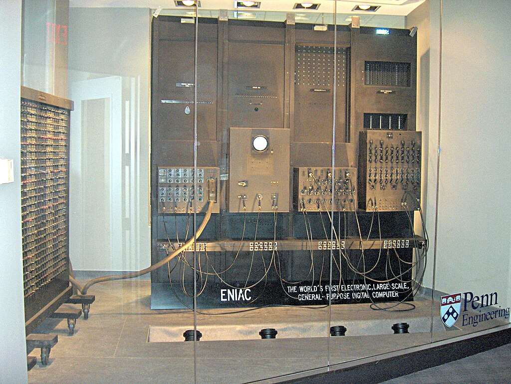
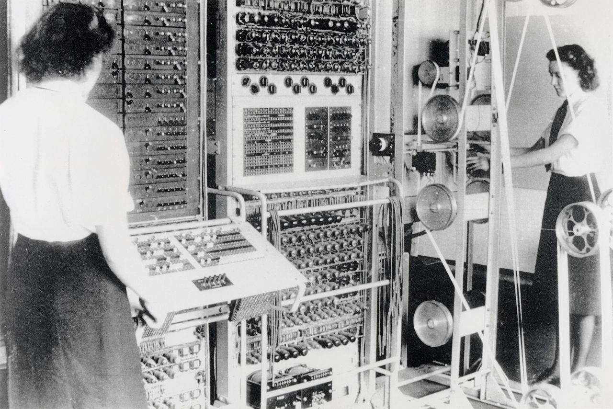
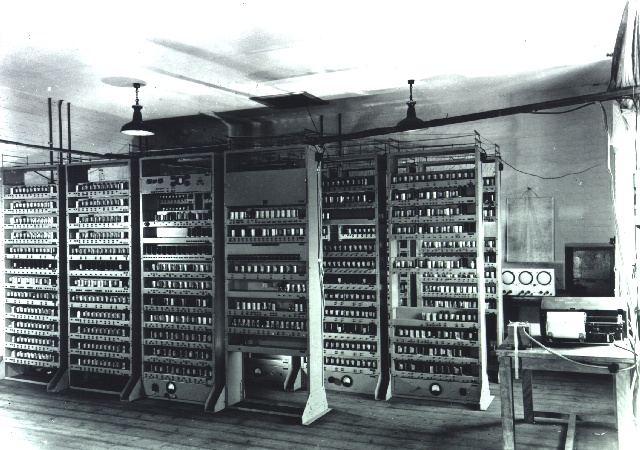

Electronic Numerical Integrator and Computer
Special purpose computer for artillery firing table calculations.
Located at the School of Engineering and Applied Science, Pennsylvania State University


Von Neumann arranged a 6-week summer workshop to design and build a new type of computer.
General purpose: many early computers were designed with a specific task in mind, which meant they were difficult to repurpose.
Von Neumann wanted to build a stored program computer.
Electronic:replacing electromechanical components which were brittle, hot and noisy.
Colossus and the ENIAC both consumed 150KW of power.
Use binary, which is the easiest encoding to work with when using electronic components.
Cambridge mathematician, physics PhD on “radio propagation of very long radio waves in the ionosphere”.
Attended Jon Neumann’s workshop, then returned to Cambridge to build the EDSAC machine.
Worked in radar during WW2, which inspired the memory technology for EDSAC.
Memory was a limitation for early electronic computers, Wilkes used “delay lines”, mercury tubes and an oscilloscope, as memory.
Electronic Delay Storage Automatic Calculator
One of the first stored program computers which used binary.
Developed by Maurice Wilkes, William Renwick (hardware engineer) and David Wheeler (first system software engineer).

A condition for funding was that EDSAC must provide a service, as opposed to just being an engineering experiment.
Ronald Fisher, with Wilkes and Wheeler, used EDSAC to solve a differential equation for gene frequency – first use of computers in biology.
In 1951, Miller and Wheeler computed a 79-digit prime number, the largest known at its time.
EDSAC played a role in Nobel-prize-winning research: Nobel laureates thanked EDSAC in their acceptance speech. John Kendrew and Max Perutz (Chemistry, 1962), Andrew Huxley (Medicine, 1963) and Martin Ryle (Physics, 1974)
EDSAC remained in operation until 11 July 1958, when it was superseded by EDSAC 2, which ran until 1965.
In pairs, teams, or individually…
Martin Campbell Kelly, University of Warwick, developed an EDSAC simulator.
Several programs and games are available.
Try Sandy Douglas’ OXO game (a tic-tac-toe game vs the computer).
Although a faithful simulation, it is still easier to use than the real thing – imagine loading the paper tape, vacuum tubes blowing frequently, and try setting the speed to EDSAC real-time.
The CPU